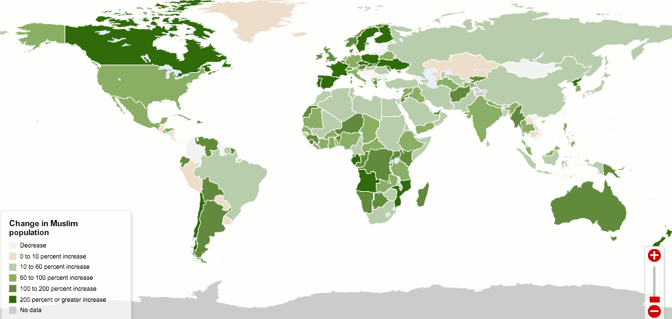

বিংশ শতাব্দীতে একদল প্রত্নতত্ত্ববিদ এবং ইতিহাসবিদদের ব্যাপক অপপ্রচারনায় বিবর্তনবাদের মতোই বিতর্কিত একটি ধারণাকে সত্য বলে প্রচার করা হয়েছে। ধারণাটি হলো: মানবজাতি শুরু থেকেই নানা প্রাকৃতিক শক্তিকে পূজা করতো, মূর্তি পূজা করতো। একাধিক ঈশ্বরে বিশ্বাস ছিল মানুষের স্বাভাবিক বিশ্বাস। এক ঈশ্বরে বিশ্বাস ধর্মের বিবর্তনের মাধ্যমে পরে উদ্ভব হয়। অথচ Sir Charles Marston, যিত্নি একজন বিশ্বখ্যাত প্রত্নতত্ত্ববিদ, তার বইয়ে প্রমাণ দেখিয়েছেন যে, মানবজাতির প্রথম ধর্ম ছিল এক ঈশ্বরে বিশ্বাস বা এর খুব কাছাকাছি একটি বিশ্বাস।[১০] Dr. Stephen Langdon, অক্সফোর্ড ইউনিভার্সিটির প্রফেসর, সুমেরীয় এলাকা Kish খোঁড়াখুঁড়ির পর প্রাচীন সভ্যতার নিদর্শন আবিষ্কার করে এই উপসংহারে পৌঁছেন যে, মানবজাতির ইতিহাস হচ্ছে এক ঈশ্বরবাদ থেকে বিকৃত হতে হতে চরম পর্যায়ের বহু ঈশ্বরবাদ এবং নানা ধরনের অশুভ শক্তিতে বিশ্বাস। একইসাথে তারা সবাই মৃত্যুর পরে অনন্ত জীবনে বিশ্বাস করতো। তার বই Semitic Religion-এ তিনি দেখান যে, প্রাচীন সুমেরীয় সভ্যতা সম্পর্কে ব্যাপক অপপ্রচারনা চালানো হলেও, তিনি সকল প্রমাণ দেখে নিশ্চিত যে, সুমেরীয় এবং সেমিটিক সভ্যতাগুলো একসময় এক ঈশ্বরে বিশ্বাস করতো, তারপরে তারা বহু ঈশ্বরবাদে ডুবে যায়।[১০]
পুরো মানবজাতি একসময় এক ধর্ম অনুসরণ করতো। তারপর আল্লাহ تعالى নবীদের পাঠালেন যারা সুসংবাদ দেন এবং সাবধান করেন। তাদের মাধ্যমে কিতাব পাঠালেন, অকাট্য সত্য দিয়ে, যেন তারা মানুষের মাঝে মতভেদের মীমাংসা করতে পারেন। অথচ যাদেরকে পরিষ্কার প্রমাণ দেওয়া হয়েছিল, শুধু তারাই অন্যকে দমিয়ে রাখার মনোভাবের কারণে তা নিয়ে মতভেদে জড়িয়ে পড়ে। তারপরে আল্লাহ تعالى বিশ্বাসীদেরকে সঠিক পথ দেখান, সে সব ব্যাপারে, যা নিয়ে তারা মতভেদ তৈরি করেছিল। আল্লাহ تعالى যাকে চান, তাকেই পথ দেখান। [আল-বাক্বারাহ ২১৩]
আমাদেরকে মনে রাখতে হবে যে, হিন্দু, খ্রিস্টান, ইহুদি, নাস্তিক — এরা হচ্ছে একই আদমের تعالى বংশধর, আমাদের দূর সম্পর্কের ভাই-বোন। একদল প্রতারকের পাল্লায় পড়ে এদের অনেকে ভুল পথে চলে গেছে, যা তারা বুঝতে পারছে না। আমাদের কাজ হচ্ছে তাদেরকে সঠিক পথের দিকে ডাকা। এদের মধ্যে অনেকেই আছে, যারা কখনোই আমাদের কথা বিশ্বাস করবে না, উল্টো আমাদেরকে আক্রমণ করবে, প্রতিনিয়ত আমাদের বিরুদ্ধে ষড়যন্ত্র করবে। এরা কখনোই চায় না ইসলামের প্রসার হোক। এরা কাফির, এদেরকে আমরা ঘৃণা করি এবং এদের থেকে আমরা নিজেদেরকে সাবধান রাখবো, প্রয়োজনে এদের বিরুদ্ধে অস্ত্র ধরবো।
কিন্তু এদের মধ্যে অনেকেই আছে, যাদেরকে ইসলাম সুন্দর করে বুঝিয়ে একটু সময় দিলেই হবে, তারা মুসলিম হয়ে যাবে। তারা কাফির নয়, তারা শুধুই অমুসলিম বা আহ্লুল ফাতরাহ, ভবিষ্যতের সম্ভাব্য মুসলিম।[৩৪৫] এদেরই কেউ হয়ে যাবে অনেক বড় আলেম, যাদের কাছে গিয়ে শেষ পর্যন্ত আমরা—জন্মগত মুসলিমরাই—ইসলামের শিক্ষা নেবো। এরকম বহু উদাহরণ আমাদের চোখের সামনেই রয়েছে। বহু ইসলামিক স্কলার আগে অমুসলিম, এমনকি ইসলাম বিরোধীও ছিলেন। তারপরে তারা ইসলাম খুঁজে পেয়ে মুসলিম হয়ে, তাদের জীবন উৎসর্গ করে দিয়েছেন ইসলামের কাজে। তাই আমাদের কাজ হচ্ছে এই সব অহিংস অমুসলিমদেরকে একই আদমের সন্তান মনে করে, আন্তরিকতার সাথে সত্যের প্রতি আহ্বান জানানো।
আমরা অনেকেই জানি না যে, পাশ্চাত্যের দেশগুলোতে মুসলিমদের সংখ্যা বৃদ্ধির হার তথাকথিত মুসলিম দেশগুলো থেকে বহুগুণে বেশি। সিএনএন-এর রিপোর্টে[২৩৮] প্রকাশ করা নিচের ম্যাপটি যেকোনো ইহুদি, খ্রিস্টান বা হিন্দুর রাতের ঘুম হারাম করে দেওয়ার জন্য যথেষ্ট—

১৯৯০ থেকে ২০১০ পর্যন্ত মুসলিমদের বৃদ্ধির হার: ফ্রান্স ৭২৮%, ফিনল্যান্ড ২৮১%, সুইডেন ২০৬%, নরওয়ে ১৮৬%, পোল্যান্ড ২৩৩%, কানাডা ২০০%, চিলি ৩০০%, স্পেইন ২৭৬%, অস্ট্রেলিয়া ১৫৯%, আর্জেন্টিনা ১২৫% ইত্যাদি।[২৩৮] সেই তুলনায় বাংলাদেশ ৪৫.৫%, সৌদি আরব এবং পাকিস্তানে ৫৮%। আমরা যদি পাশ্চাত্যের দেশগুলোর সব অমুসলিমদের ঘৃণা করি, তাহলে আমরা প্রকৃতপক্ষে ভবিষ্যতের মুসলিমদেরই ঘৃণা করছি। তাদেরকে ইসলামের প্রতি নিরুৎসাহিত করছি আমাদেরই আচরণের মাধ্যমে।
পুরো মানবজাতি একসময় এক ধর্ম অনুসরণ করতো
পুরো মানবজাতি একসময় এক ‘উম্মাহ’ ছিল। উম্মাহ এসেছে আম্ম أَمّ থেকে, যার অর্থ কোনো এক লক্ষ্য অর্জনে চেষ্টা করা। উম্মাহ হচ্ছে একদল মানুষ, যাদের একটি নির্দিষ্ট লক্ষ্য রয়েছে, যা অর্জনে সবাই একসাথে কাজ করে। উম্মাহ একজন মানুষকে দিয়েও তৈরি হতে পারে, যেমন কিনা কু’রআনে আল্লাহ تعالى নবী ইব্রাহিমকে عليه السلام এক উম্মাহ বলেছিলেন, আবার কোনো বিরাট জাতিও হতে পারে।[১৪][৬] আদম عليه السلام থেকে মানুষের প্রথম উম্মাহ শুরু হয়। আল্লাহ تعالى আদমকে عليه السلام পথ দেখিয়েছিলেন, যখন তিনি তার পাপের জন্য তাওবাহ করেছিলেন। সেই দেখানো পথ অনুসারে তার সন্তান এবং পরবর্তী কয়েক প্রজন্ম এক উম্মাহ হয়ে সঠিক পথে ছিল। কিন্তু তারপর তাদের মধ্যে বিভাজন শুরু হয়। মানুষ শয়তানের প্ররোচনায় পড়ে ভুল পথে যেতে থাকে। তখন আল্লাহ تعالى নবী পাঠিয়ে তাদেরকে আবার সঠিক পথ দেখান।[১২]
তারপর আল্লাহ تعالى নবীদের পাঠালেন যারা সুসংবাদ দেন এবং সাবধান করেন
কুরআনে বার বার বলা হয়েছে: নবী, রাসুল হচ্ছেন মানুষের জন্য সুখবরের বাহক এবং সাবধানকারী। بَشِير বাশিরুন (সুখবরের বাহক) এবং نَذِير নাযিরুন (সাবধানকারী) একসাথে কমপক্ষে ২০ বার কুরআনে এসেছে, যার মধ্যে ১৫ বারই প্রথমে বাশিরুন (সুখবরের বাহক) বলা হয়েছে। নবী-রাসুলরা আগে একজন সুখবরের বাহক, পরে একজন সাবধানকারী। কিন্তু আজকাল আমাদের দাওয়াহ দেওয়ার পদ্ধতি হয়ে গেছে: প্রথমে ১ ঘন্টা সমাজের, দেশের গুষ্টি উদ্ধার, পরে ১০ মিনিট কিছু আশার কথা।
আজকাল অনেক মসজিদে জুম্মার খুতবায় বা হালাক্বাগুলোতে আলোচনার শুরু থেকে শেষ পর্যন্ত থাকে: আমরা কত খারাপ, কত ভুল করছি, কীভাবে আমাদের চামড়া বার বার পুড়িয়ে কাবাব বানানো হবে, অমানুষিকভাবে পিটানো হবে, গলার মধ্যে গরম পানি ঢেলে পুড়িয়ে দেওয়া হবে, আমাদের জীবনে সব কষ্টের কারণ হচ্ছে ধর্ম না মানা ইত্যাদি নানা ধরনের হতাশাকর, নির্মম কথাবার্তা। প্রতি শুক্রবার কোনোমতে বাবা-মা বা স্ত্রীর ধাক্কায়, না হলে ‘লোকে কী বলবে’ এই ভয়ে মসজিদে মানুষ যাও বা যায়, তারপর গিয়ে এমন সব হতাশাকর, ‘বিরক্তিকর’ কথাবার্তা শুনতে থাকে যে, তখন মানুষের মনে শুধু একটাই চিন্তা আসে: কখন এই লোকটা চুপ করবে, কখন নামাজ শুরু হবে, আর কত তাড়াতাড়ি আমি বাড়ি ফিরে যাবো।
নামাজ শুরুর ১০ মিনিট আগে সিংহভাগ মানুষ যে মসজিদে ঢোকে, সেটা আমাদেরকে চোখে আঙ্গুল দিয়ে দেখিয়ে দেয়: আমরা কী নির্মমভাবে বিফল হয়েছি সঠিকভাবে মানুষকে দাওয়াহ দিতে। গানের কনসার্টে মানুষ ঘণ্টাখানেক আগে যায়, যেন সামনের সারিতে জায়গা পাওয়া যায়, শিল্পীদেরকে নিজের চোখে কাছ থেকে দেখা যায়। আর মসজিদে মানুষ যায় একদম শেষ মুহূর্তে, তারপর জুতা রাখার জায়গায়, না হয় বের হওয়ার গেটের কাছে বসার জন্য ধাক্কাধাক্কি লেগে যায়, যেন নামাজ শেষে সবার আগে ছুটে বের হয়ে যাওয়া যায়।
সুখবরের বাহক
নবি-রাসুল হচ্ছে بَشِير বাশিরুন: সুখবরের বাহক। একজন ধর্ম প্রচারকের প্রথমে সুখবর প্রচার করা উচিত। আমরা যদি খ্রিস্টান পাদ্রিদের দেখি, দেখব যে, তারা তাদের ধর্ম প্রচার করার জন্য যে পদ্ধতিটি অনুসরণ করেন, তা যথেষ্ট বৈজ্ঞানিক। তারা যীশুর ব্যাপারে চমৎকার সব কথা বলেন, কীভাবে যীশু মানুষের সব পাপ নিজের কাঁধে নিয়ে নিয়েছেন, কীভাবে তার ত্যাগের বিনিময়ে মানুষ আজকে পাপমুক্ত, কীভাবে তিনি তার অনুসারীদেরকে পরম ভালবাসায় স্বর্গে নিয়ে যাবেন ইত্যাদি নানা ধরনের আশার কথায় তারা মুখর। তাদের বাণী যতই ভুল হোক না কেন, একজন খ্রিস্টান ঠিকই রবিবারে চার্চে গিয়ে পাদ্রির বক্তব্য শুনে হাসিমুখে শান্তি নিয়ে ফিরে আসেন। তিনি সপ্তাহের বাকি ছয় দিন অপেক্ষা করে থাকেন: কবে আবার রবিবার আসবে, চার্চে গিয়ে আবার সুন্দর কিছু কথা শোনা যাবে।
একইভাবে আমরা যদি আজকে বাংলাদেশে খ্রিস্টান মিশনারিরদের কাজ দেখি, লক্ষ্য করলে দেখা যায়: তারা হিন্দু, মুসলিম, বৌদ্ধ সবাইকে যেভাবে দাওয়াত দিচ্ছেন, তা খুবই কার্যকর পদ্ধতি। তাদের কথা ভর্তি থাকে আশার বাণী, ভালবাসার কথা, ক্ষমার কথা, সুন্দর জীবনের কথা। এইসব কথা শুনে মুগ্ধ হয়ে হাজারে হাজারে হিন্দু, মুসলিম, বৌদ্ধ আজকে খ্রিস্টান হয়ে যাচ্ছেন। তারা এমন সব মানুষদেরকে টার্গেট করেন, যাদের জীবনটা থাকে চরম দুর্বিষহ, অভাবে, অবহেলায়, সমাজের আবর্জনা হয়ে ধুঁকে ধুঁকে বেঁচে থেকে তারা হাঁপিয়ে উঠেছেন। এই অবস্থায় কিছু আশার কথা, ভালবাসার কথা তাদের জীবনটা বদলে দিতে পারে। যেহেতু মসজিদের ইমামের কাছ থেকে তারা আশার কথা, ভালবাসার কথা শোনেন না, তখন ঠিক সেই সুযোগটাই পাদ্রিরা নিয়ে নেন।
খ্রিস্টান পাদ্রিদের হাজার বছরের এই অত্যন্ত সফল পদ্ধতি এমনিতেই আসেনি। সাইকোলজিতে বইয়ের পর বই লেখা হয়েছে কীভাবে মানুষকে সুন্দর, পজেটিভ কথা বলে কাছে ডাকতে হয়। পাদ্রিদেরকে প্রশিক্ষণের সময় বিশেষভাবে ট্রেইনিং দেওয়া হয়: কীভাবে মানুষের মন জয় করতে হয়।
সাবধানকারী
এখানে আল্লাহ تعالى যে শব্দটি ব্যবহার করেছেন তা হলো – نَذِيرًا যা ইনযার থেকে এসেছে। ইনযার অর্থ এমন খবর জানানো, যেটা জানার পর মানুষ সাবধান হয়ে যায়, চিন্তিত হয়ে পড়ে। ইনযার হচ্ছে ভালবাসার সাথে, উৎসাহের মাধ্যমে সাবধান করা, যাতে মানুষ নিজের ইচ্ছায় ভুল দিকে না যায়। যেমন, ছোট বাচ্চাদেরকে আগুন, সাপ ইত্যাদির খারাপ দিকগুলো সম্পর্কে সাবধান করে দেওয়া, যাতে তারা সেগুলো নিয়ে চিন্তা করে, বুঝে শুনে সেগুলো থেকে দূরে থাকে। এটা কোনো ভয়ভীতি দেখিয়ে সাবধান করা নয়।[১]
আপনি যদি কাউকে বলেন, “তিন দিন সময় দিলাম, মুসলিম হও। নাইলে কিন্তু…” – এটা ইনযার নয়। ইনযার ব্যবহার করে আল্লাহ تعالى আমাদেরকে শেখাচ্ছেন যে, অমুসলিমদেরকে, এমনকি ঘোরতর কাফিরদেরকেও ভালবাসার সাথে, উৎসাহের সাথে ইসলামের দিকে ডাকতে হবে, তাদের ভুল ধারণার পরিণতি সম্পর্কে সাবধান করতে হবে। কোনো ধরণের ভয়ভীতি, জোর করা যাবে না।
নবীরা কীসের সুখবর দেন?
আমাদের অনেকের মনে প্রশ্ন আসতে পারে: নবীরা আবার কীসের সুখবর দেন? তারা তো ধর্মীয় নিয়ম কানুন নিয়ে আসেন, যেখানে বলা থাকে: এটা করা যাবে না, ওটা খাওয়া যাবে না, এটা দেখা যাবে না, ওটা বলা যাবে না ইত্যাদি হাজারো নিয়ম কানুন। তারা আবার সুখবর দিলেন কোথায়?
এই দুনিয়াতে মানুষের আত্মাকে আল্লাহ تعالى দেহ নামের এক জেলখানায় ভরে দিয়েছেন। এই জেলখানায় থাকার অনেক নিয়মকানুন আছে। এখানে কিছু কাজ করা নিষিদ্ধ, কিছু কাজ নিয়মিত করা বাধ্যতামূলক। এই নিয়মগুলো দেওয়া হয়েছে জেলখানার সবার ভালোর প্রতি লক্ষ রেখে, জেলখানায় নিয়ম শৃঙ্খলা বজায় রাখার জন্য। এই হচ্ছে জেলখানার প্রকৃতি। একজন মু’মিনের কাছে এই ব্যবস্থাকে একটা জেলখানার মতো মনে হতে পারে, কিন্তু এটাই বাস্তবতা এবং সে সেটা মেনে নেয়।
কিন্তু অবিশ্বাসীরা এটা বিশ্বাস করতে চায় না যে, একদিন কিয়ামত হবে, বা মৃত্যুর পরে আর কোনো জীবন আছে। তারা মনে করে: এই দুনিয়াটাই হচ্ছে তাদের বেহেশত— এখানে কোনো নিয়ম নেই, কোনো নিষেধ নেই, যখন যা খুশি তাই করা যাবে। যেহেতু তাদের কাছে এই দুনিয়াটাই হচ্ছে একমাত্র জীবন, এর পরে আর কোনো অস্তিত্ব নেই, তাই তারা এই দুনিয়াটাকে তাদের মতো করে বেহেশত বানিয়ে, যতটুকু সম্ভব আমোদ ফুর্তি করে যেতে চায়। এই দুনিয়ার মতো ক্ষণস্থায়ী একটা জায়গা, যেখানে অসুখ হয়, প্রিয়জনেরা হারিয়ে যায়, পদে পদে নানা কটু কথা, অন্যায় সহ্য করতে হয়–এটাই তাদের শেষ বেহেশত। এর পরে আর কিছু পাওয়ার আশা নেই।
এরকম একটি ধারণা মানুষকে কতখানি হতাশ করে দেয়, সেটা আমাদের, মুসলিমদের পক্ষে চিন্তা করাটা কঠিন। একটা মানুষ যখন প্রতিদিন নিজেকে বোঝায়: “একদিন আমি মরে যাবো, আর এই সবকিছু হারিয়ে যাবে, আমার পরিবার আমাকে ছেড়ে চলে যাবে, আর কোনোদিন আমি তাদেরকে পাবো না; আমার সব সম্পত্তি একদিন আমার কাছ থেকে চলে যাবে, আমার অস্তিত্ব একদিন ধ্বংস হয়ে যাবে, আর মাত্র কয়েকটা বছর, তারপর সব শেষ”–কি ভয়ংকর হতাশাকর পরিস্থিতির মধ্যে তাকে জীবনটা পার করতে হয়! সে তখন মরিয়া হয়ে যায় যেন এই জীবনের প্রতিটি মুহূর্তে যত বেশি করে পারে আনন্দ করে নিতে পারে। তখন সে বন্ধু বান্ধব নিয়ে মরিয়া হয়ে ড্রিঙ্ক করে মাতাল হয়ে যায়। যৌবন শেষ হয়ে গেল, শরীর নষ্ট হয়ে গেল –এই তাড়নায় ছুটতে থেকে অশ্লীল কাজে গা ভাসিয়ে দেয়।
তারপর শরীর এবং মন ভর্তি অসুখ নিয়ে বিভিন্ন ধরনের আসক্তিতে জড়িয়ে পড়ে। একসময় সে এমন পর্যায়ে পৌঁছে যায় যে, তার ভয়ংকর আসক্তির জন্য এবং জঘন্য সব স্মৃতিকে ভুলে থাকার জন্য নিজেকে অ্যালকোহলে, ড্রাগে বুঁদ করে রাখতে হয়। এদেরকে বাইরে থেকে দেখে অনেক আমোদে আছে, জীবনটা অনেক উপভোগ করছে মনে হলেও, রাতে ঘরে ফেরার পর যখন তারা একা হয়, তখন তাদের উপরে হঠাৎ করে নেমে আসে ভয়ংকর বিষণ্ণতা, অবসাদ এবং হতাশা। তাদের জীবনে আর বড় কোনো গন্তব্য নেই, বড় কোনো উদ্দেশ্য নেই। এই নষ্ট দুনিয়াটাই তাদের শেষ চাওয়া-পাওয়া।
আপনারা যদি পাশ্চাত্যের অনেক অমুসলিমদের মুসলিম হওয়ার ঘটনাগুলো পড়েন, দেখবেন তাদের ঘটনায় একটি ব্যাপার বার বার ঘুরে ফিরে আসে: তাদের অনেকেই দিনরাত ফুর্তি করত, ব্যভিচার, মদ ছিল তাদের জীবনে খুবই স্বাভাবিক একটা ঘটনা। শনি-রবিবার সাপ্তাহিক ছুটির দিনগুলোতে বার-এ গিয়ে সারারাত ড্রিঙ্ক করে মাতাল হয়ে আসত। তারপর যখন সোমবারে হুঁশ ফিরত, এক ভয়ংকর হতাশা, বিষণ্ণতায় ডুবে যেত। জীবনটা তাদের কাছে অসহ্য মনে হতো। নিজের কাছে নিজেকে একটা পশু মনে হতো। “জীবন কি এটাই? জীবনে কি এর চেয়ে বড় কিছু নেই? এভাবে নিজেকে শেষ করে দিয়ে কি লাভ?”—এই ধরনের প্রশ্ন তাদেরকে পাগলের মতো তাড়িয়ে বেড়াত। তাদের জীবনে কোনো সুখ ছিল না, ছিল কিছু ক্ষণস্থায়ী ফুর্তি। হতাশা, বিষণ্ণতা, অশান্তি এবং নিজেকে শেষ করে দেওয়ার একটা অসহ্য ইচ্ছাকে দমিয়ে রাখার জন্য তাদেরকে দিনরাত নিজের সাথে সংগ্রাম করতে হতো, নিজেকে মদে বুঁদ করে রাখতে হতো।
আল্লাহ تعالى আমাদেরকে এর ঠিক উল্টোটা করতে বলেছেন। তিনি আমাদেরকে যে জীবন-বিধান দিয়ে দিয়েছেন, সেভাবে জীবন পার করলে এই দুনিয়ার পরীক্ষা পার করা আমাদের জন্য অনেক সহজ হয়ে যাবে। আমরা তখন নিজের জীবনে, পরিবারে, সমাজে, দেশে অনেক অশান্তি কমিয়ে ফেলতে পারবো। একই সাথে মৃত্যুর পরে অনন্তকাল পরিবার-পরিজন, বন্ধুবান্ধব নিয়ে অনাবিল, অফুরন্ত শান্তিতে জান্নাত উপভোগ করতে পারবো। আমাদের অস্তিত্ব কখনো শেষ হয়ে যাবে না। আমরা অনন্ত কাল ধরে অস্তিত্ব নিয়ে থাকবো, আমাদের মহান সৃষ্টিকর্তার সান্নিধ্যে। তাঁকে تعالى নিজের চোখে দেখতে পাবো। তাঁর تعالى কথা নিজের কানে শুনতে পারবো। —এরচেয়ে বড় সুখবর আর কী হতে পারে?
তাদের মাধ্যমে কিতাব পাঠালেন, অকাট্য সত্য দিয়ে
আল্লাহ تعالى বলছেন, “তাদের মাধ্যমে কিতাব পাঠালেন, অকাট্য সত্য দিয়ে” —কু’রআন কোনো মেটাফিজিক্স বা ফিলসফির উপর বই নয় যে, এখানে পৃষ্ঠার পর পৃষ্ঠা মানুষের অনুমান এবং যুক্তির উপর নির্ভর করে থিওরির পর থিওরি লেখা আছে এবং যার ভূমিকাতে লেখক আগেভাগেই বলে দেন, “আমার কোনো ভুল হয়ে থাকলে ক্ষমা সুন্দর দৃষ্টিতে দেখবেন।” কু’রআন অকাট্য সত্য —এই ঘোষণা করতে আল্লাহ تعالى দ্বিধাবোধ করেন না।
আজকাল সুধীবৃন্দরা দাবি করেন, “তোমাদের ইসলাম একটা অসহনশীল, বর্বর ধর্ম। তোমরা দাবি করো যে, ইসলাম হচ্ছে একমাত্র সঠিক ধর্ম, আর অন্য সব ধর্ম সব ভুল। আমি মনে করি এরচেয়ে অমুক ধর্ম অনেক সহনশীল, সুন্দর। কারণ সেই ধর্ম অন্য ধর্মগুলোকে এভাবে তুচ্ছতাচ্ছিল্য করে না। ”
—এর উত্তর খুব সহজ: প্রথমত, হ্যা, ইসলাম দাবি করে যে, ইসলাম হচ্ছে একমাত্র সঠিক ধর্ম এবং বাকি সব ধর্ম তার আসল রূপ থেকে বিকৃত হয়ে গেছে, যার কারণে সেগুলো আর মানা যাবে না। দ্বিতীয়ত, খ্রিস্টান এবং ইহুদি ধর্মও সেটাই দাবি করে, এমনকি হিন্দু ধর্মও একই দাবি করে, যেখানে খোদ কৃষ্ণই সেই কথা বলেছেন ভগবৎ গীতায়। [দেখুন: প্রমাণ দেখাও, যদি সত্যি বলে থাকো — আল-বাক্বারাহ ১১১-১১২]
তৃতীয়ত, যদি কোনো ধর্ম দাবি না করে যে, সে একমাত্র সঠিক ধর্ম, কারণ বাকি সব ধর্ম বিকৃত হয়ে গেছে, তার মানে দাঁড়ায় যে, সৃষ্টিকর্তা সেই ধর্ম পাঠিয়েছেন এমনিতেই সময় কাটানোর জন্য। তিনি বসে বসে বিরক্ত হয়ে যাচ্ছিলেন, তাই তিনি নতুন একটা কিছু করার জন্য প্রচুর কাঠখড় পুড়িয়ে, বিপুল পরিমাণ মানুষের সময় খরচ করে, অনেক মানুষের ত্যাগের বিনিময়ে এমন একটা নতুন ধর্ম পাঠালেন, যেটা না মানলেও কোনো সমস্যা নেই, কারণ আগের ধর্মগুলো তো ঠিকই আছে। অন্য ধর্মের লোকরা সব সৎ পথেই আছে এবং স্বর্গেও যাবে। তাই এই নতুন ধর্মটা যদি কেউ মানে তো ভালো, না মানলেও কোনো সমস্যা নেই।
যেন তারা মানুষের মাঝে মতভেদের মীমাংসা করতে পারেন
মানুষের মাঝে মতভেদ থাকবেই, এটাই স্বাভাবিক। মানুষকে এভাবেই সৃষ্টি করা হয়েছে। কারো কাছে কোনো একটা ব্যাপার ন্যায় মনে হতে পারে, যেটা অন্যের কাছে অন্যায় মনে হবে। কারো কাছে কোনো একটা কাজ ভালো মতে পারে, যেটা অন্যের কাছে খারাপ মনে হবে। একারণে যখন কোনো একটি দল একসাথে হয়ে কোনো জাতির জন্য আইন বানানোর দায়িত্ব নেবে, স্বাভাবিকভাবেই সেই দলের লক্ষ্য, উদ্দেশ্য, স্বার্থ আইন বানানোকে প্রভাবিত করবে। মানুষের লোভ, হিংসা খুবই শক্তিশালী। এগুলো মানুষকে এমনভাবে নিয়ন্ত্রণ করে যে, মানুষ অনেক সময় বুঝতেও পারে না কীভাবে তার সিদ্ধান্তগুলো এগুলো দিয়ে প্রভাবিত হচ্ছে। এছাড়া শয়তান তো আছেই পদে পদে মানুষকে কুবুদ্ধি দেওয়ার জন্য। একারণেই যখনি মানুষ সিদ্ধান্ত নেবে তারা ভোটাভুটির মাধ্যমে কোনটা ন্যায়, কোনটা অন্যায় নির্ধারণ করবে, তখন বিরাট সব ভুল সিদ্ধান্ত নেওয়া হবে।
যেমন, মানবজাতির শুরু থেকেই সমকামিতাকে একটা জঘন্য ব্যাপার হিসেবে দেখা হয়েছে। অথচ ২০০১ সালে নেদারল্যান্ডে সমকামিদের মধ্যে বিয়েকে ভোটাভুটি করে আইনত বৈধ ঘোষণা করা হয়। গত হাজার বছর ধরে খ্রিস্টানরা সমকামিতাকে জঘন্য, বর্বর মনে করেছে। অথচ ২০০৩ সালে কানাডার এংলিকান চার্চ সমকামীদের বিয়ের অনুষ্ঠান চার্চে করতে স্বীকৃতি দেয়।[৩৪৩] একইভাবে পতিতাবৃত্তি একটি জঘন্য পেশা। গত শতকে একে বৈধতা দেওয়ার জন্য প্রচুর চেষ্টা হয়েছে এবং আফ্রিকা, আমেরিকা, ম্যাক্সিকো সহ অনেক দেশের অনেক প্রদেশে একে আইনত বৈধতা দেওয়া হয়েছে। বাংলাদেশের পেনাল কোড ধারা ৩৭২, ৩৭৩ অনুসারে পতিতাবৃত্তি আইনত বৈধ, যদি নারীর বয়স ১৮ বা বেশি হয়।[৩৪৪] এই হচ্ছে ‘মুসলিম’ দেশের অবস্থা!
গত কয়েক শতকে কিছু মনীষী যেমন গান্ধী, টলস্টয় এসে অপরাধীদেরকে করুণা দেখানো এবং হত্যাকারীদেরকে সোজা ফাঁসি না দিয়ে তাদেরকে সংশোধন করার সুযোগ করে দেওয়ার জন্য অনেক ‘মহৎ উদ্যোগ’ নিয়ে গেছেন।[৭] তাদের অধ্যবসায়ের ফলাফল: আজকে পশ্চিমা দেশগুলোতে এমন জটিল সব আইন তৈরি হয়েছে যে, হত্যাকারীরা আজকাল হত্যা করে ফাঁসি পাওয়ার পরিবর্তে আইনের জটিল গলিঘুপছি দিয়ে বেরিয়ে এসে, হয় মানসিক রোগী উপাধি পেয়ে অত্যাধুনিক ফাইভ-স্টার হোটেলের মতো হাসপাতালে থেকে চিকিৎসা পাচ্ছে, না হয় থ্রি-স্টার হোটেলের মতো কারাগারে তিনবেলা খাবার, নিজের ব্যক্তিগত কক্ষ, সকালে-বিকালে খেলাধুলার ব্যবস্থা পাচ্ছে। এইসব কয়েদী, যাদের ফাঁসি হয়ে যাওয়ার কথা, ফাঁসি না পেয়ে জনগণের কোটি কোটি টাকার ট্যাক্সের টাকায় নিশ্চিন্ত জীবন পার করছে। এদের চাকরি-ব্যবসা করতে হয় না, পরিবার চালাতে হয় না, সমাজের কোনো কল্যাণে অবদান রাখতে হয় না।
মানুষকে আইন বানানোর দায়িত্ব দেওয়া হলে আইন প্রণেতাদের উর্বর মস্তিস্ক থেকে কী বের হয়, তার চমৎকার উদাহরণ হচ্ছে আমেরিকার আইন। আজকে আমেরিকার প্রেসিডেন্ট ২০ লক্ষ কয়েদী নিয়ে কী করবেন, তা বুঝতে পারছেন না। লক্ষ লক্ষ কয়েদী পালার বিশাল খরচ জোগান দিতে তিনি হিমশিম খাচ্ছেন।[৩২০] এমনকি বিল ক্লিনটন সবার সামনে স্বীকার করছেন: এত বিপুল পরিমাণের কয়েদী জেলে রাখার জন্য তিনি যে সিদ্ধান্ত নিয়েছিলেন, তা ভুল সিদ্ধান্ত ছিল।[৩২১]
এভাবে আমরা ইতিহাস ঘাঁটলে দেখতে পাবো, একটি দুটি নয়, শত শত আইন তৈরি করা হয়েছে, যা পরে সংশোধন করা হয়েছে, যখন সমাজে, দেশে ব্যাপক দুর্নীতি, অন্যায় ছড়িয়ে গেছে। এখনো এমন সব জিনিস আইন করে বৈধ করা হচ্ছে, যা কয়েক যুগ আগে মানুষ চিন্তাও করতে পারত না যে, এগুলো মানুষ কখনো বৈধ করতে পারে। অথচ আমরা চোখের সামনে অনেক নোংরা কাজ বৈধ হয়ে যেতে দেখছি। একারণেই মানুষকে যদি মানুষের জন্য আইন তৈরি করতে দেওয়া হয়, তাহলে মানুষের বিরাট ক্ষতি হবেই। তাই আইনের মূলনীতি, ভিত্তি আসতে হবে এমন কারো কাছ থেকে, যিনি মানুষের মতো লোভ, হিংসা, পক্ষপাতিত্ব দিয়ে প্রভাবিত নন। যার ভেতরে কোনো মানব দুর্বলতা নেই। যিনি মানুষের অতীত, বর্তমান, ভবিষ্যৎ সব দেখতে পান, এবং সব দেখে বিবেচনা করে সঠিক সিদ্ধান্ত নিতে পারেন। একমাত্র তখনি সম্ভব পুরো মানবজাতির জন্য চিরকাল কল্যাণ নিয়ে আসবে, এমন কোনো আইন তৈরি করা। একারণেই আল্লাহ تعالى এই আয়াতে বলেছেন যে, তিনি নবীদেরকে আইন দিয়েছেন, যেন তারা মানুষের মধ্যে মতভেদের মীমাংসা করতে পারে, মানুষকে সঠিক পথ দেখাতে পারে। মানুষের মধ্যে আইন, নিয়মকানুন নিয়ে মতভেদ তৈরি হয়, সেগুলোর মীমাংসা করার জন্য স্ট্যান্ডার্ড হচ্ছে আল্লাহর تعالى কিতাব।
অথচ যাদেরকে পরিষ্কার প্রমাণ দেওয়া হয়েছিল, শুধু তারাই অন্যকে দমিয়ে রাখার মনোভাবের কারণে তা নিয়ে মতভেদে জড়িয়ে পড়ে
চৌদ্দশ বছর আগে একদিনের ঘটনা: কয়েকজন উচু পর্যায়ের খ্রিস্টান পাদ্রীরা হন্তদন্ত হয়ে বড় পাদ্রীর সাথে দেখা করতে গেছেন। তিনি এক জরুরি গোপন বৈঠক ডেকেছেন। বাইবেলের কিছু বাণী নিয়ে বিরাট বিতর্ক শুরু হয়ে গেছে। মক্কায় কুরাইশ বংশে এক মধ্য বয়স্ক ভদ্রলোক নাকি দাবী করছেন: তিনিই হচ্ছেন বাইবেলে ভবিষ্যত বাণী করা শেষ নবী! বাইবেলেই নাকি এক আরব নবীর আগমনের কথা ভবিষ্যত বাণী করা আছে। তারা বাইবেল ঘেটে সেই সব বাণী পড়ে, মক্কার সেই মধ্য বয়স্ক লোকের সম্পর্কে খোঁজ খবর নিয়ে দেখেছেন, বাইবেলে তার সম্পর্কে যা যা লেখা আছে, তার সব মিলে যায়! হায়, হায়, এখন কী হবে!
তাদের এত বড় চার্চ, এত ক্ষমতা, রাজকীয় সন্মান, বিরাট লোকলস্কর সব শেষ হয়ে যাবে। এতদিন তারা বাইবেল বিকৃত করে, নিজেদের সুবিধা মত বাণী ঢুকিয়ে মানুষকে বোকা বানিয়ে যে আরাম-আয়েসের জীবন পার করছিলেন, তা সব শেষ হয়ে যাবে। সর্বনাশ! যেভাবেই হোক সেই লোকটাকে থামাতেই হবে। বড় পাদ্রী গম্ভীর গলায় বললেন, “যান, ব্যবস্থা করুন। লোকটাকে যেন কালকে থেকে আর খুঁজে পাওয়া না যায়।”
বিংশ শতাব্দীর ঘটনা: কয়েকজন বিখ্যাত হুজুর হন্তদন্ত হয়ে বড় হুজুরের সাথে দেখা করতে গেছেন। বড় হুজুর এক গোপন বৈঠক ডেকেছেন। বিদেশ থেকে কিছু আলেম এসে কুরআন এবং সহিহ হাদিস ব্যবহার করে হুজুরদের দলের প্রচার করা নানা শিক্ষাকে বিদআত বলে প্রমাণ করছে। উপমহাদেশে শত বছর ধরে চলে আসা তাদের বিখ্যাত দরবার শরিফ, সেই বিদেশি আলেমদের প্রচারের কারণে বিতর্কের মুখে পড়েছে। তাদের দরবার শরিফের অনুসারীরা আজকাল নানা ধরনের প্রশ্ন করা শুরু করেছে। টিভিতে নানা ধরনের অনুষ্ঠানে তাদের শত বছর থেকে চলে আসা নানা ইবাদতকে ভুল বলে প্রচারণা করা হচ্ছে। হুজুররা সেই বিদেশি আলেমদের সব দাবিকে একেবারে উড়িয়েও দিতে পারছেন না, কারণ আলেমদের দলিল বড়ই শক্ত। হায়, হায়, এখন কী হবে!
এভাবে চলতে থাকলে তো তাদের লক্ষ লক্ষ অনুসারী হারিয়ে যাবে! তাদের দরবার শরিফের মাদ্রাসা, ইসলামিক রিসার্চ কমপ্লেক্স, কোটি কোটি টাকার যাকাত-সাদাকা ফান্ড, আলিশান ভবন, লাইব্রেরি, বিদেশ যাওয়ার ফান্ড —এগুলো সব তো হুমকির মুখে পড়বে। এতদিন তারা অনেকেই নিজেদের মত ফাতওয়া, বিদআহ প্রচলন করে বই বিক্রি করে, মানুষকে বিভ্রান্ত করে, নানা ধরনের ধর্মীয় উৎসব, ফান্ড কালেকশন, সরকারী পলিসির ব্যবস্থা করে যে বিশাল সম্পত্তি, প্রতিপত্তির আয়োজন করেছেন, সেগুলো তো শেষ হয়ে যাবে। তাদেরকে আবার গরীবি জীবনে ফিরে যেতে হবে!
এরকম কোনোভাবেই হতে দেওয়া যাবে না। ‘বড় হুজুর’ গম্ভীর গলায় বললেন, “এই সব বিদেশি আলেমদের দলিলগুলো যেভাবেই হোক ভুল প্রমাণ করে তিন সপ্তাহের মধ্যে বই বেরুন করুন। ওয়াজ মাহফিলের আয়োজন করুন। এদের বিরুদ্ধে পীর, বুজুর্গদের অপমান করার কালিমা লাগিয়ে দিন। মানুষ তখন এদেরকে আর সহ্য করতে পারবে না। এদেরকে দেশ ছাড়া করে ছাড়বে। আর সরকারকে জানিয়ে দিন: এই সব বিদেশি আলেমরা আফগানিস্তানে টেরোরিস্টদের মদদ দেয়। তাহলে সরকার আর এদেরকে দেশে ঢুকতে দেবে না।”
এই সব ইসলামি দলগুলোর ব্যাপক দুর্নীতির পরেও লক্ষ লক্ষ মুসলিম ইসলামের সঠিক শিক্ষা খুঁজে পান। শত বাঁধা, বিপত্তি, আক্রমণ, অপমান উপেক্ষা করে ইসলামের সঠিক শিক্ষা প্রচার করার জন্য কিছু আলেম তাদের জীবন উৎসর্গ করে দেন। সবচেয়ে বড় কথা, আল্লাহ تعالى কু’রআনে গ্যারান্টি দিয়েছেন যে, যারা আন্তরিকভাবে বিশ্বাসী, তাদেরকে আল্লাহ تعالى সঠিক পথ দেখাবেনই—
তারপরে আল্লাহ تعالى বিশ্বাসীদেরকে সঠিক পথ দেখান, সে সব ব্যাপারে, যা নিয়ে তারা মতভেদ তৈরি করেছিল। আল্লাহ تعالى যাকে চান, তাকেই পথ দেখান।
সূত্র:
- [১] নওমান আলি খানের সূরা আল-বাকারাহ এর উপর লেকচার এবং বাইয়িনাহ এর কু’রআনের তাফসীর।
- [২] ম্যাসেজ অফ দা কু’রআন — মুহাম্মাদ আসাদ।
- [৩] তাফহিমুল কু’রআন — মাওলানা মাওদুদি।
- [৪] মা’রিফুল কু’রআন — মুফতি শাফি উসমানী।
- [৫] মুহাম্মাদ মোহার আলি — A Word for Word Meaning of The Quran
- [৬] সৈয়দ কুতব — In the Shade of the Quran
- [৭] তাদাব্বুরে কু’রআন – আমিন আহসান ইসলাহি।
- [৮] তাফসিরে তাওযীহুল কু’রআন — মুফতি তাক্বি উসমানী।
- [৯] বায়ান আল কু’রআন — ড: ইসরার আহমেদ।
- [১০] তাফসীর উল কু’রআন — মাওলানা আব্দুল মাজিদ দারিয়াবাদি
- [১১] কু’রআন তাফসীর — আব্দুর রাহিম আস-সারানবি
- [১২] আত-তাবারি-এর তাফসীরের অনুবাদ।
- [১৩] তাফসির ইবন আব্বাস।
- [১৪] তাফসির আল কুরতুবি।
- [১৫] তাফসির আল জালালাইন।
- [১৬] লুঘাতুল কুরআন — গুলাম আহমেদ পারভেজ।
- [২৩৮] CNN “Growth of Muslim Population by Country” http://edition.cnn.com/interactive/2011/01/world/map.muslim.growth/index.html
- [৩৪৩] Wikipedia,. (2015). Blessing of same-sex unions in Christian churches. Retrieved 20 December 2015, from https://en.wikipedia.org/wiki/Blessing_of_same-sex_unions_in_Christian_churches
- [৩৪৪] Impowr.org,. (2015). Current Legal Framework: Prostitution in Bangladesh | impowr.org. Retrieved 20 December 2015, from http://www.impowr.org/content/current-legal-framework-prostitution-bangladesh
- [৩৪৫] Yusuf, Hamza (2008). “Who are the disbelievers” Retrieved 20 December 2015, from http://www.mujahideenryder.net/pdf/WhoAretheDisbelievers.pdf